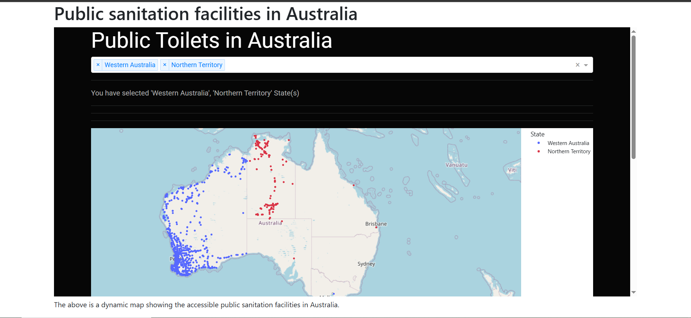

Chapter 7: Dash in Django
What is Dash?
Dash is a low-code framework for building data visualization apps using Python. When combined with Render, a web-hosting platform, you have a strong combination of hosting your dash app to the global web.
Rendering dash app in our django app
Truth be told, we tried all we could to render a Dash app inside our Django sanitation app using the steps outlined in this document and here. However, we kept running into several errors until we threw in the towel and well, ultimately, we resorted to easier means.
The below may sound like an amateurish method (and probably is) but it nevertheless enabled us to achieve the same end goal. HTML provides an iframe tag that enables one host a mini-webpage with the same webpage. The syntax is:
<iframe src="URL"></iframe>
Therefore, going back to the sanitation.html file within our australia folder, we shall add a div tag and some text to give some context to our dashboard.
templates
└── australia
├── sanitation.html
└── home.html
First let's get the link to our Dash app deployed in render. Here is the link.
Previously, you sanitation.html template was as follows:
{% extends "base.html" %}
{% block base_content %}
<h1>Sanitation</h1>
{% endblock base_content %}
Add the following div element inside your sanitation.html template.
<div>
<iframe src="https://public-toilets-in-australia-infomap.onrender.com"
width="100%" height="600px">
</iframe>
</div>
As you can see, apart from inserting the url to our Dash app, we also specify the height and width of our webpage.
For more context, we changed the <h1> tag and added a very short paragraph to provide more contextual basis. Here is the sanitation.html template at length.
{% extends "base.html" %}
{% block base_content %}
<h1>Public sanitation facilities in Australia</h1>
<div>
<iframe src="https://public-toilets-in-australia-infomap.onrender.com"
width="100%" height="600px">
</iframe>
</div>
<div>
<p>The above is a dynamic map showing the accessible
public sanitation facilities in Australia.
</p>
</div>
{% endblock base_content %}
The Dash app rendered in our Django app
To display the Dash app in our Django app, first ensure that your virtual environment is already activated via source venv/bin/activate. Thereafter, run python3 manage.py runserver and go to http://127.0.0.1:8000/sanitation. If all is well, it will display the webpage shown below.
